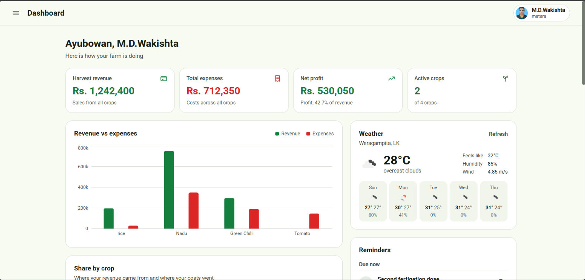
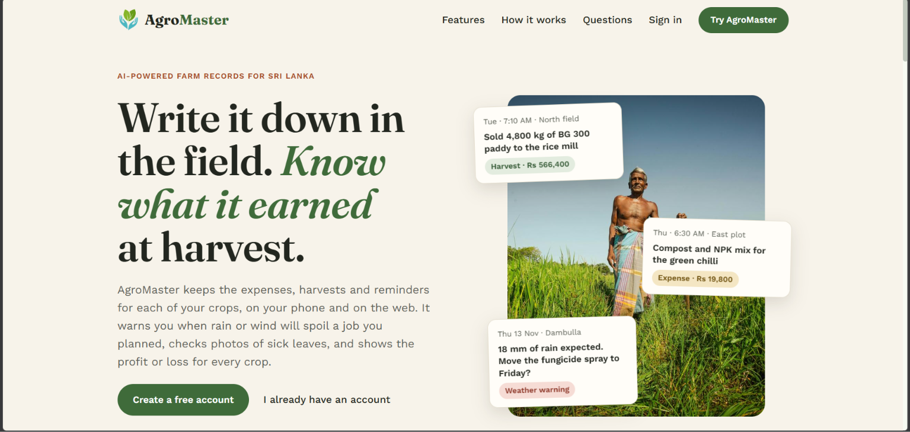
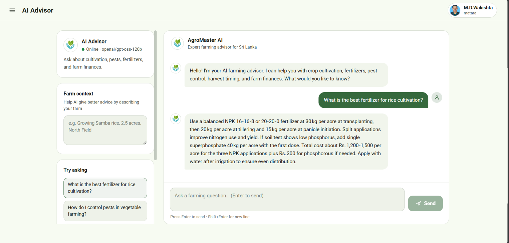
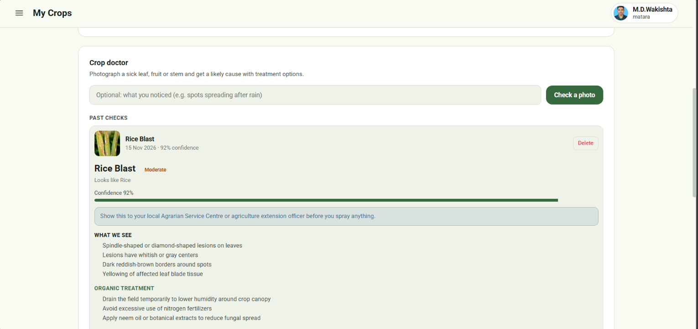
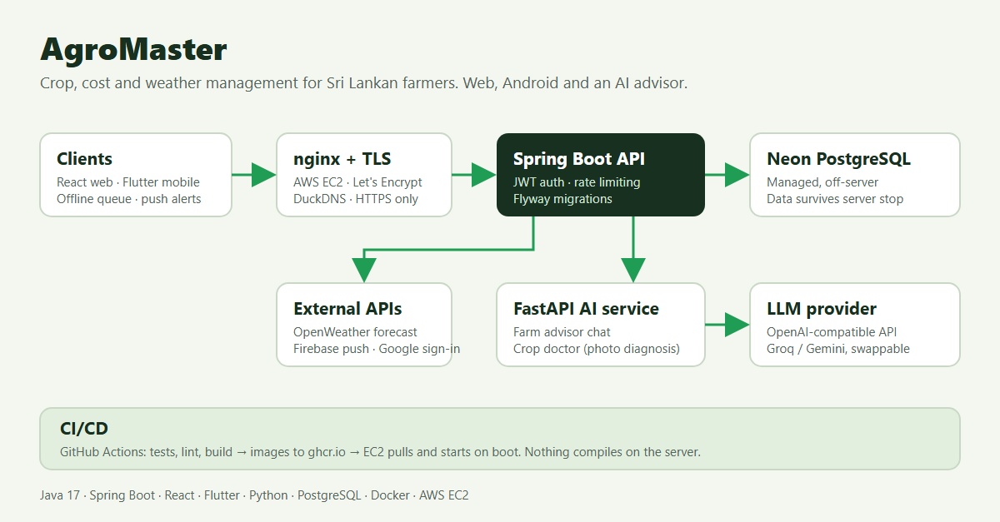

How the system works, and why it was built this way. Web app, Android app, backend, AI and deployment.

AgroMaster helps a small-scale Sri Lankan farmer answer one question that is hard to answer without records: did this crop actually make money?
A farmer spends money on a crop for months (seed, labour, fertiliser, water, transport) and then sells the harvest in one or two payments. Without writing it all down, "was the paddy worth it?" is a guess. AgroMaster records each crop from planting to harvest, every cost, and every sale, and shows the profit or loss per crop and for the whole farm.
On top of the records there are four helpers:
Each account belongs to one farmer. There are no shared farms or roles. Every record belongs to exactly one user, and that rule is enforced inside every database query, not only in the screens.
| Part | Files | Lines |
|---|---|---|
| Backend (Java) | 111 | ~8,100 |
| Mobile app (Dart) | 72 | ~7,200 |
| Website (React) | 39 | ~5,100 |
| AI service (Python) | 4 | ~540 |
Counts exclude tests and generated code.




A farmer opens the dashboard and the app asks for /api/dashboard:
/api, and passes it to the backend.127.0.0.1 and cannot be reached from the internet.Owns everything important: login, the data model, ownership rules, the database, email, push notifications, weather and alerts. It is also the only way to reach the AI service. Code is layered controller → service → repository → entity, and DTOs are used at the edge so database entities are never sent to the apps directly. Two scheduled jobs run daily: the reminder digest at 07:00 and a clean-up of expired refresh tokens at 03:30.
A single-page app that holds no secrets. It calls the API on relative paths (/api/...), which nginx forwards in production and the Vite dev server forwards locally, so one build runs in both places with no environment file. Even the Google client id is fetched at runtime. Pages are lazy-loaded, so the landing page does not carry the charting library.
The same features as the website, plus a camera button for the crop doctor, offline saving and push notifications. It talks to the same API with the same accounts. Release builds only use HTTPS; plain HTTP is allowed only in debug builds for local testing. Details in section 9.
Four endpoints: /ai/ask (advisor), /ai/insights (per-crop comment), /ai/diagnose (crop doctor) and /ai/health. It has no database and no login of its own, and it is only reachable from the backend over the internal Docker network.
users (1) ──< (N) crops (1) ──< (N) expenses
│ ├──< (N) harvests
│ ├──< (N) reminders (1) ──< (N) reminder_notifications
│ ├──< (1) crop_insights
│ └──< (N) crop_diagnoses (1) ── (1) crop_diagnosis_thumbnails
├──< (N) refresh_tokens
└──< (N) device_tokens
email_verifications standalone: no user exists yet at registration
media_objects photos and avatars, when no S3 bucket is configured
13 tables, built by 16 Flyway migrations (V0 to V15).
crop_id is required and child tables cascade on delete. Deleting a crop removes its costs, sales, reminders and diagnoses in one step, with no orphans.email_verifications has no user id. Email is verified before the account exists (section 5).reminder_notifications is its own table. Each reminder is announced twice (two days and one day ahead), which one flag cannot store. A unique rule on (reminder_id, lead_days) makes a double send impossible.(crop_id, client_ref) turns a repeated upload into "return the existing row" (section 9).ddl-auto is none. Migrations run at start-up, so an empty database builds itself on first boot.PostgreSQL does not index foreign keys by itself, and the first schema had no indexes, so every query was a full table scan. Migration V4 added composite indexes that match each query's filter and sort:
| Index | Serves |
|---|---|
idx_crops_user_created | a farmer's crop list, newest first |
idx_expenses_crop_date | expenses per crop, and the expense total |
idx_harvests_crop_date | harvests per crop, and the revenue total |
idx_reminders_due | partial index, pending reminders only |
Checked with EXPLAIN ANALYZE: Index Scan, not Seq Scan.
Three ways in: email and password (with a verified email), password reset, and Google sign-in.
POST /api/auth/send-code { email } → 6-digit code emailed
POST /api/auth/verify-code { email, code } → confirmed
POST /api/auth/register { name, email, … } → account created, tokens returned
The email is verified before the account is created. If mail fails, the farmer simply cannot register yet and can try again; no half-made account is left behind. A code is used instead of a link because it can be typed on another device, which matters where a family shares one phone.
Six digits is only a million options, so the code is protected by four rules together:
| Rule | Value |
|---|---|
| Expiry | 10 minutes |
| Wrong guesses | 5, then the code is dead |
| Resend cooldown | 60 seconds per address |
| Use | once only |
The code itself is never stored, only SHA-256(email + ":" + code), so a database leak does not reveal live codes.
The app gets an ID token from Google, and the backend checks its signature, issuer, audience and expiry against Google's public keys. Without this check, anyone could send a hand-made token naming any email address. A forged alg: none token was tested and is rejected. An existing password account is linked only when Google says the address is verified.
password_changed_at is stamped on every change, and tokens issued before it are rejected.Per IP address, per minute. The IP is the one nginx sets in X-Real-IP, not the first X-Forwarded-For value, which any client can fake.
| Endpoint | Requests per minute |
|---|---|
| send-code, forgot-password, register | 5 |
| login, verify-code, reset-password, google | 10 |
| refresh | 30 |
| weather | 60 |
AI calls have their own limits per farmer (section 6), because each one costs money.
Groq, Gemini, OpenAI, OpenRouter and Ollama all use the same "chat completions" protocol. So the service uses one OpenAI SDK client with a configurable address, and switching provider is a settings change, not a code change. Version 1.0 began with three separate SDKs, and one SDK's update broke another at import time, taking the whole service down. One client means one set of dependencies.
The advisor runs on a fast text model on Groq (gpt-oss-120b). That model cannot read images, so the crop doctor has its own optional provider settings:
AI_BASE_URL / AI_API_KEY / AI_MODEL chat (Groq) AI_VISION_BASE_URL / AI_VISION_API_KEY / AI_VISION_MODEL photos (Gemini)
If the vision settings are empty, photos use the chat provider. Each feature uses the best model for its job.
The system prompt allows only farming topics: crops, soil, fertiliser, pests, water, weather on the farm, harvest, selling and farm money. Anything else, including "ignore your rules" tricks, gets one fixed sentence: "I can only help with farming questions." The farmer's "farm context" text is added as information only, after the rules, so it cannot override them.
The interface shows plain text, so a stray ** from the model would appear on screen. A small server-side cleaner removes markdown but leaves maths like Rs. 5000 * 2 acres alone. And reasoning models spend part of max_tokens on hidden thinking: with a 1,024 ceiling, answers were cut off mid-sentence. The ceiling is now 4,096; short answers come from the prompt, not the limit.
The farmer photographs a sick leaf, fruit or stem, optionally adds a note, and gets a likely cause with treatments.
Chemical advice names active ingredients only, never brands, and always reminds the farmer to follow the label and wear protection. Photos are stored in the database, or in S3 (or an S3-compatible store such as Cloudflare R2) when a bucket is configured.
Current weather and a five-day forecast come from OpenWeather for each field's town. To stay inside the free API quota, results are cached: town locations for 24 hours, current weather for 10 minutes, forecasts for 30 minutes.
Every upcoming task is checked against its field's forecast. Five risks are flagged:
| Risk | Example |
|---|---|
| Rain wash-off | fertiliser or spray planned before heavy rain |
| Spray in wind | spraying planned on a windy day |
| Irrigation before rain | watering just before a downpour |
| Harvest in rain | harvest planned on a wet day |
| Heat stress | field work in extreme heat |
Each alert explains the risk and suggests the next safe time, which the farmer can accept with one tap. Alerts have their own endpoint, so slow weather data never delays the dashboard.
TZ=Asia/Colombo a 07:00 reminder fired at 01:30.Rural signal is unreliable. With no connection the app shows the data it last loaded, and new expenses and harvests go into an outbox on the phone. Each record gets a UUID on the phone before it is saved. When the signal returns, the outbox is sent. If a reply is lost and the record is sent again, the server finds the same (crop_id, client_ref) and returns the existing row instead of adding a copy. Every record arrives exactly once.
Push uses the Firebase Cloud Messaging HTTP v1 API directly: an OAuth token from google-auth-library and one REST call per message. The full Firebase Admin SDK was not used because it would not fit inside the backend's 640 MB memory limit. Device tokens that Firebase reports as gone are deleted. Push is optional; without Firebase settings it is simply off.
Every CI run builds a release APK. A public release is made by pushing a tag such as mobile-v1.0.1: a workflow checks that the tag matches the version in pubspec.yaml, builds a signed APK and publishes it as a GitHub Release with a SHA-256 checksum. The current release is 1.0.1.
| Control | What it prevents |
|---|---|
| BCrypt password hashing | reading passwords from a database leak |
| Codes and refresh tokens stored as SHA-256 | leaked values being usable |
| 10-minute codes, 5 tries, single use | guessing a 6-digit code |
| 30-minute JWT, single-use refresh, reuse detection | a stolen token staying useful |
password_changed_at check | a stolen token surviving a password reset |
| Per-IP limits using nginx's real IP | mail bombing, password guessing, fake-IP bypass |
| Same reply for unknown email and wrong password | finding out which emails are registered |
| Google token signature check | forged tokens claiming any account |
| Ownership in every query | reading another farmer's data by changing an id |
| AI behind the logged-in backend, with per-farmer limits | strangers spending the project's AI credit |
| Farming-only prompt, context as information | the advisor being used for other things |
| Photo type by header, pixel limit, re-encode | malicious files, memory exhaustion, GPS leaks |
Backend and AI bound to 127.0.0.1 | the API being reached over plain HTTP |
| Swagger off in production | publishing a map of the whole API |
| No JWT secret fallback; app refuses a weak one | running with a known signing key |
| HSTS, CSP, X-Frame-Options | downgrade attacks and clickjacking |
| Release APKs use HTTPS only | traffic being read on public Wi-Fi |
The most serious issue found was in version 1.0: the AI endpoint was briefly public through nginx with no login, an open AI endpoint billed to this project's key. It now sits on the internal network behind the authenticated backend.
backend → mvnw verify: unit + Testcontainers tests, JaCoCo ┐ web → npm ci, eslint, vitest, build │ every push and ai-service → ruff, pytest │ pull request mobile → generated code current, analyze, test, APK ┘ images → build 3, push to ghcr.io ┐ main only, after deploy → ssh, git pull, pull, restart ┘ the checks pass mobile-v* → signed APK to GitHub Releases on tag
Images are built in CI, never on the server. The 1 GB server could not reliably compile Java; builds were often killed for lack of memory. Now GitHub Actions builds and publishes, and the server only downloads. Deploys went from 3 to 5 minutes, with a failure risk, to about 30 seconds, and the server has no JDK, Maven or Node installed. Every image is tagged :latest and :<commit-sha>, so rolling back means setting IMAGE_TAG to an older commit and restarting. A release that does not come up healthy fails the job.
The server (EC2 t3.micro, Singapore, the same region as the database) is switched off between demos, and AWS gives it a new public IP on every start. A systemd unit runs, in order:
Renewal is last because Let's Encrypt checks the site through nginx on port 80. An expired certificate does not stop nginx from starting, so even after months switched off the server comes up and then repairs its own certificate.
COMPOSE_PROFILES decides which services start, so the command is the same locally and in production and the two cannot drift.
| Service | local | prod |
|---|---|---|
| Postgres container | starts | not started (Neon) |
| Mailpit mail catcher | starts | not started (real SMTP) |
| backend, ai-service | starts | starts |
| nginx frontend | not started (Vite dev server) | starts |
Free-tier EC2, Neon free tier, DuckDNS and GHCR: effectively zero. There is no Elastic IP on purpose, because AWS bills for one while the server is stopped. Nothing ties the system to AWS: it is Docker plus an outside database, so any Linux server can run it with the same bootstrap script.
| Suite | Tools | Tests | Covers |
|---|---|---|---|
| Backend | JUnit 5, Testcontainers, JaCoCo | ~150 | Real Flyway migrations on a real Postgres. Sign-up codes, token rotation and reuse detection, one farmer unable to touch another's crops, profit figures, validation, rate limits, digest de-duplication, weather alerts, crop doctor uploads, offline replays, push registration, account deletion. |
| Website | Vitest, Testing Library, MSW | ~33 | Session and token refresh, dashboard, expense editing, weather alerts, crop doctor. |
| AI service | pytest, ruff | 53 | Prompt rules, markdown cleaning, diagnosis parsing and limits, provider fallbacks, separate vision provider. A fake model replays answers, so no test calls a paid model. |
| Android | flutter test | 81 | Sign-in and sign-up, crops, dashboard, alerts, crop doctor, offline outbox, push. The fake backend accepts each refresh token once, like the real one. |
Outside services (AI, OpenWeather, Firebase) are replaced with fakes in tests. All four suites must pass before anything is deployed.
The wrong-guess counter on verification codes once did nothing. On a wrong guess it was increased, saved, and then an exception was thrown, but @Transactional rolled the increase back. The brute-force limit looked correct in the code and silently did not work. It was found by checking the database after five wrong guesses and seeing zero, and fixed with noRollbackFor.
cp .env.example .env docker compose up -d --build cd frontend-web && npm install && npm run dev
| Website | http://localhost:5173 |
| Backend | http://localhost:8080 |
| Mail inbox (Mailpit) | http://localhost:8025 |
| Postgres | localhost:5434 |
No mail leaves the machine locally: Mailpit catches it and shows it in a web inbox. The Android app runs with flutter run against the same local backend.
sudo journalctl -u agromaster -n 50 # what the boot sequence did docker compose ps # all three should be healthy docker compose logs backend --tail 50 docker compose logs ai-service --tail 50
| Symptom | Likely cause |
|---|---|
| Site unreachable, instance running | DNS not updated: run deploy/update-dns.sh |
| Certificate warning | expired while off: renew and reload |
| Backend unhealthy | usually the Neon credentials |
| Crop doctor fails, advisor works | vision settings: AI_VISION_MODEL must be a model name, and the key must match AI_VISION_BASE_URL |
| Google button missing | GOOGLE_CLIENT_ID empty in .env |
End of document.